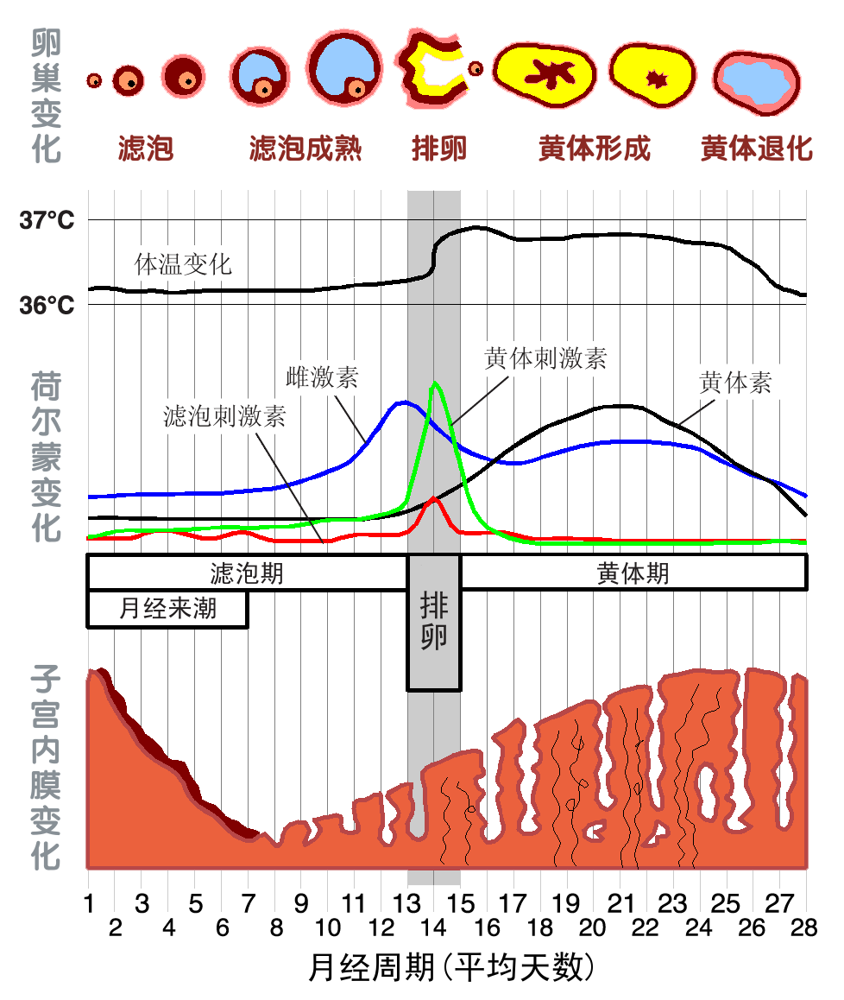

《爱的沟通》
从小到大从来没有人教我们如何爱一个人，如果童年被父母老师同学爱过，定然也会知道如何去爱别人，但是爱情与亲情、友情等还是有所不同，需要专门的探索，但是千万不要走上PUA这种邪路，专门去学PUA最后可能就爱无能了，爱情中不存在“一招鲜吃遍天”的套路，所有女人都是独一无二的，就像人生需要用一生去探索。
这里我把读《爱的沟通》时做的笔记与大家分享，希望对大家有所帮助。这是一本专门写给男性的实用型书（当然，女性看了也会更加了解自己），这些规则只是轮廓，具体需要自己慢慢探索去发现你爱的人。
女人最看重的是信任感，安全感
a. 与进化论抚育孩子有关
b. 具体表现为：言出必行、表里如一，能够依靠、有责任感，并且能够如实地展示你自己。
c. 保护身心男女都抱怨感到孤独，并希望更多的亲密关系，需要情绪协调（attune）
a. 女人最看重的特质是值得信任，信任是通过情感上的联结建立的，
情感上的联结是通过情绪协调达到的；
因此，情绪协调意味着信任。b. 怎么做——ATTUNE
Attend关注：注意力集中
Turn toward转向：因为在女人心目中，亲密意味着四目相对。
Understand理解：多提问题，不要提供解决方案，不要分散注意力，不要开玩笑，更不要试图弱化这个问题的影响，要询问她此时此刻的感受以及这件事对她的意义。
Nondefensively listen非防御性倾听：多听少说，没人喜欢被批评
Empathize共情：当一个人感受到自己与他人联结，而非孤身一人的时候，她大脑中负责情绪处理的部分就会镇静下来。c. 除了情感上的安全，女人也需要生理上的安全。不要用声音个头恐吓女生，不要用蛮力
三种激素决定了女人每一天的生理心理活动：雌激素、孕酮和睾酮。

a. 在整个生理周期的头两周，雌激素水平会逐步上升，女性会更加友好、健谈，更加放松、镇静，但情绪上也会更加敏感。在生理周期的后两周，孕酮水平会逐渐上升，女性会变得更加易怒、更有压力、更不镇静，也会更想要独处。
b. 在月经期前一周，女性的孕酮水平下降，她们会更容 易变得情绪敏感、易怒、有压力或者伤感。应该运动、减少咖啡因摄入量、服用B族维生素或者草药
c. 激素对女性的性欲有极大的影响。当女人处在排卵期时，她更加偏好具有进攻性的男人； 当她处在非排卵期时，她更加偏好温和的男人。女人对恐惧的感受和男人完全不同。
a. 在高压之下，男性会变得不太害怕。与此相反，当女人感受到较高的压力时，她们会更加害怕，并且更有可能对未来产生恐惧。
b. 伴侣间的身体接触非常有效。即使只是简单的握手，也对稳定女性的情绪有非常大的作用；而更好的办法是，在一开始就帮助她避免恐惧。非语言性小技巧
a. 女性最容易被脸部完全对称的男性所吸引
b. 成功者的特质之一是在社交场合占据最大化的空间。永远不要站着环抱双臂，也不要翘二郎腿，同性之间的身体触碰也可以体现一个男人的社交主导性。
c. 保持镇静是男人吸引女人的另一项进化优势非语言性信号
a. 可接近
i. 直接的眼神接触、微笑或者目光反复地看向你又飞快地闪开
ii. 和男士不经意地擦身而过，飞速地用身体碰触一下男性
b. 不可接近
i. 始终和朋友说话女人会对有强烈情绪能量的男人印象深刻。这种男人对他所谈论的事情充满热忱，非常善于提问，并且认真倾听回答。
信息素可以使男女相互吸引或者排斥，尤其是女性对气味非常敏感
生理的愉悦产生催产素导致人非理性判断
童年印记影响伴侣选择
你必须反复告诉你的女人，你对她的身体是多么着迷
女人的愤怒来源可以分为三类：感到无能为力、感到不公，以及感到他人的不负责任。
如果你使用了批评、污蔑、防卫或沉默抵制等任何一种方法升级了矛盾，那你就有81%的可能性会走向结束婚姻的道路。
成功的男人有3个简单却有效的方法来降低心率、处理情绪。第一是深呼吸。第二是从1数到10。第三个策略，就是休息一下。
聪明的男人会通过询问以下三个问题，来找出女人的痛苦到底在哪里：你需要什么？你担心什么？你的感受如何？
女性逛街的意义：
a. 原始女性负责采集，细节记忆力特别好，社会性事业；男人负责狩猎，目标型。
b. 打扮自己，如果自己长得不好看，就无法获得男人的爱情和承诺，潜意识担忧无法传播和繁衍自己的基因（高跟鞋能使女人拱起背部，撅起臀部。在动物世界里，这意味着雌性已经准备好性交了）如果你想要活得更长一些，请维系好你和伴侣之间的关系。 如果你希望你的伴侣活得更长久一些，请鼓励她好好维系与闺蜜的友谊。
当面对压力时，男性会采取战斗／逃跑模式，而女性则会采取“关爱与协助”模式
男人爱女人的一个重要方式就是，支持她成为一个母亲，爱护并养育她的孩子。
母亲是孩子的老师，而父亲则是导游。婴儿既需要老师，也需要导游。
a. 父亲玩耍的方式对子女的智力成长和社会功能 的发展都有积极的作用。最佳的预测因素是这些人在5岁的时候，其父亲介入小孩成长的程度。父亲介入小孩成长的程度越高，孩子 长大以后的共情水平就越高。
b. 那些 曾经在童年时期感受到更多父亲关爱的孩子们，在中年时的社会关系， 如婚姻、孩子和社会交往的表现上更为良好
c. 与父亲互动更多的孩子，其语文测试成绩更高。
d. 那些在社会交往和学习成绩上存在双重障碍的孩子，他们的父亲通常都比较冷酷、专制、烦人，而且也更喜欢贬低他人。永远不要停止和她约会；永远不要停止了解她；永远不要停止联络她。
保证爱情长久的方法：
a. 6秒钟的吻：6秒钟后，催产素会大量分泌，恐惧会减少，此时信任才会建立起 来
b. 和她约会：你要为此感到兴奋，还要安排去一些从来没有去 过的地方，尝试新的活动，让浪漫成为她的一个习惯
c. 了解她：以多问一些开放式的问题
d. 感谢她：每一天，你都要找到一些事情赞美她，并表达你的感谢。
e. 尊重她的梦想：她们的生活梦想是应对极端压力、失望和 挫折的力量源泉